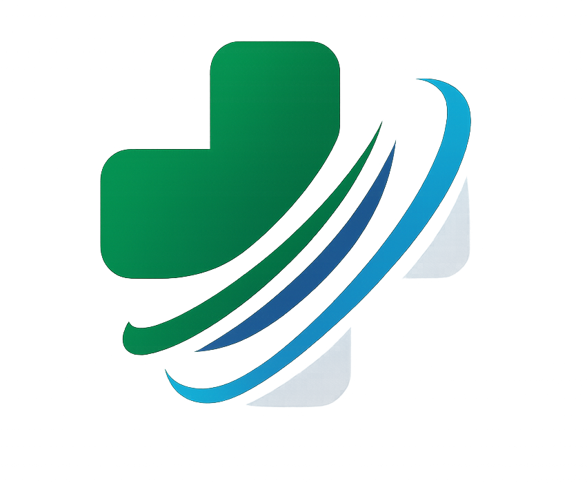

Sistema Integral de Gestión Hospitalaria
La solución completa para modernizar su centro médico, que te permite centralizar procesos, reducir tiempos, mejorar resultados y elevar la experiencia del paciente.
SAMI es un sistema integral de gestión hospitalaria multi-tenant diseñado específicamente para consultorios médicos, hospitales y clínicas. Digitaliza completamente su operación clínica con tecnología de vanguardia.
SAMI se adapta perfectamente a diversos entornos médicos
Centraliza, optimiza y eleva cada proceso de tu centro médico
Consolidación de toda la actividad médica en un panel intuitivo que acelera la gestión diaria.
Asegura una administración clara y precisa de cada espacio donde se atienden pacientes.
Historias clínicas electrónicas completas y seguras
Elimine la papelería física, reduzca errores médicos y acceda instantáneamente al historial completo, moderno y organizado del paciente desde cualquier dispositivo.
Calendario inteligente con gestión optimizada
Optimice la utilización de consultorios, reduzca tiempos de espera y mejore la experiencia del paciente con agendamiento inteligente
Documentación clínica completa y profesional
Documentación clínica profesional que cumple estándares internacionales, facilita facturación y protege legalmente al médico
Un módulo práctico que acelera el proceso de formular y garantiza precisión clínica.
Un módulo financiero simplificado orientado a clínicas y consultorios que requieren orden y claridad.
Flexibilidad total para adaptar la plataforma a cada organización médica.
El centro de la identidad profesional dentro del sistema.
Evita accesos indebidos y garantiza un entorno controlado.
Permite que cada médico personalice su identidad y documentación dentro del sistema.
Protección total de datos sensibles de salud
Cumpla con normativas de protección de datos de salud, auditorías gubernamentales y proteja la privacidad de sus pacientes
Dashboards y reportes para toma de decisiones
Tome decisiones basadas en datos reales, identifique oportunidades de crecimiento y optimice la rentabilidad de su centro médico
El impacto real de SAMI en su organización
Construido con las mejores herramientas del mercado
Framework PHP líder mundial
Interfaz reactiva sin JavaScript
Diseño moderno y responsive
Interoperabilidad garantizada
Un camino claro hacia la transformación digital
No lo dejamos solo. Nuestro equipo lo acompaña desde el día 1 hasta que su centro médico opere 100% digitalmente
Respaldo técnico cuando lo necesite
Planes flexibles para cada tipo de organización
La diferencia es clara
| Aspecto | ❌ Tradicional | ✅ SAMI |
|---|---|---|
| Acceso a Información | Búsqueda manual (minutos/horas) | Instantáneo (segundos) |
| Gestión de Citas | Agenda física, llamadas manuales | Calendario digital, recordatorios automáticos |
| Historias Clínicas | Papel, riesgo de pérdida | Digital, respaldado, legible |
| Reportes | Conteo manual, errores | Automáticos, tiempo real |
| Seguridad | Vulnerable | Encriptado, auditable |
| Escalabilidad | Más espacio y personal | Ilimitado, sin espacio físico |
| Costo | Papel, archivo, personal extra | Suscripción fija |
El futuro de su centro médico comienza ahora